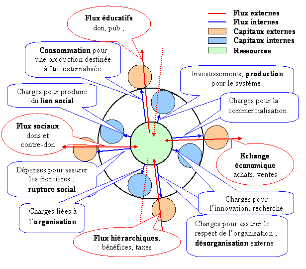
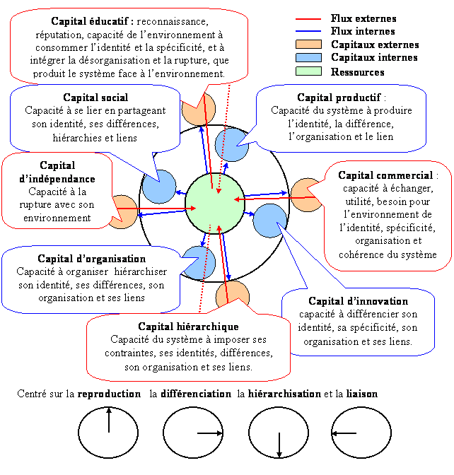
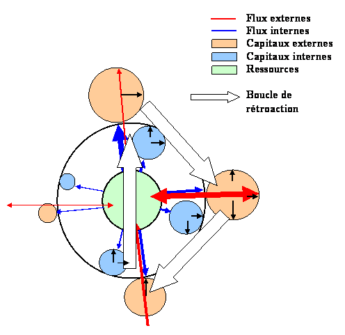
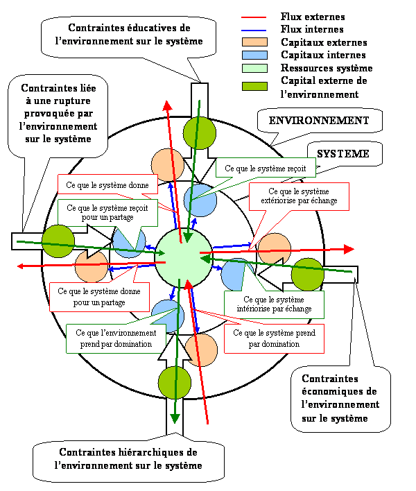

Pour toutes informations relatives à la simulation d'entreprise, de projet, de système politique, d'état ou autre système social, demandez des informations supplémentaires, une offre ou un cd de démonstration à :
Les simulations informatiques permettent d'anticiper l'évolution des systèmes, de déterminer les points de rupture, l'émergence de nouvelles contraintes qui conduisent à la scission ou à la fusion des systèmes, à la multiplication ou à l'écartement des niveaux. Les simulations permettent de connaître l'impact des changements de variables internes et externes, des changement d'échelle de valeurs, d'objectifs, de croyances, des changements dans l'environnement social ou écologique. En simulant les systèmes selon plusieurs scénarios, on peut anticiper l'évolution du capital actuel et du capital complexe.
Simulation de la dynamique des flux et des capitaux d'un système
L'objectif de cette simulation est de déterminer les conditions optimum de fonctionnement d'un système, un entreprise ou un état par exemple, en fonction de ses objectifs. La simulation conduit à tester plusieurs scénarions pour déterminer l'impact de l'affectation des ressources sur la production des capitaux. Ainsi, la simulation permet de déterminer l'affectation optimum des ressources dans les différentes catégories que nous avons définies et ainsi d'optimiser le développement à cout terme (maximisation des capitaux) et à long terme (maximisation de la complexité). Le calculs d'indices permet de déterminer le rendement dans la conversion des flux en capitaux et des capitaux en flux. La comparaison de ces indices dans le temps permet de déterminer des performances pour les systèmes. Les simulations que nous présentons dans ce chapitre sont une aide à la détermination des budjets.
Le schéma global ci-dessous permet de visualiser les différentes composantes prises en compte dans la simulation.

Les principes à la base de la dynamique systémique sont les suivants:
Le capital total Cx de la phase x est une variable liée à l'histoire du système, c'est-à-dire à l'accumulation du capital par le passé +C(t-1)x, et des flux actuelles internes fx qui construisent ce capital. Ces flux internes, c'est-à-dire l'affectation des ressources dans les différents secteurs définits ci-dessus, produisent les capitaux avec une certaine efficacité qui est déterminée par l'indice A. L'indice A est exprimé par rapport au capital qu'il produit. En disposant de données sur la comptabilité de plusieurs années, on peut déterminer l'évolution de cet indice et ainsi afiner les simulations. On peut également déterminer si les performances s'améliorent ou se détériorent. La composante négative -Dx correspond à l'usure du capital, c'est-à-dire à sa dévalorisation dans le temps.
Cx = ( C(t-1)x * (1 + A(fx)) ) - Dx
Les flux externes produisent les capitaux externes. Les flux internes produisent les capitaux internes et externes. Les flux internes correspondent à l'affectation des ressources dans les différents domaines des systèmes tels que nous les avons définits. Elles correspondent aux dépenses effectuées par exemple pour les investissements productifs, pour la commercialisation, pour l'organisation etc. La somme des flux internes est égale au chiffre d'affaire d'une entreprise par exemple. Il en est de même pour les flux externes. La somme des flux externes sortants est égale à la somme des flux externes entrants, qui est égale à la somme des flux internes. Les flux externes correspondent, non pas à une catégorie de dépenses (flux internes), mais à une manière d'externaliser ses flux. Ainsi, les ressources que l'on produit pour être externalisées peuvent être donnée (publicité...), vendue commercialisées, échangées), prise (taxes, impots...), ou partagée. Se sont les quatre catégories constituées par les flux externes. En revanche, les ressources produites pour être externalisées seront toutes catégorisées, quelque soit le mode d'externalisation, dans les flux internes R- .
Nous venons de voir que les flux produisent les capitaux. A l'inverse, les capitaux produisent des flux. Nous distinguons le capital externe qui produit des flux internes, et le capital interne qui produit des flux externes. Les capitaux sont définits par leur importance quantitatives, mais également de manière qualitative par la centration dont ils sont l'objet. . La centration est indiquée par une petit flèche à l'intérieur du disque qui symbolise le capital. La flèche peut prendre quatre directions indiquant ainsi les quatre pôles correspondants aux quatre phases du système. La centration indique le type de flux que le capital va engendrer. La figure suivante nous détails ces caractéristiques.

Le capital extérieur se construit avec les flux extérieurs et avec les flux intérieurs. Prennons comme exemple le capital extérieur de la phase "reproduction". Le capital éducatif est constitué de la reconnaissance et de la réputation d'un bien, d'un service ou d'un rite. Ce capital est construit par les flux extérieurs, lorsque l'on donne de ces éléments à son environnement. Il s'agit par exemple de la publicité pour une entreprise, de la redistribution sociale et des subventions pour un état, ou de ce que les parents donnent à leurs enfants durant leurs jeunesse. Ce capital est également construit par les flux internes, c'est-à-dire par les ressources du système que l'environnement consomme. En effet, plus l'environnement consomme ce que produit le système, un bien ou un service par exemple, c'est-à-dire par définition son identité, plus le capital éducatifs sera important.
La centration des capitaux peut être multiple. En effet, le système peut disposer des capitaux de différentes catégories. Par exemple, Une entreprise de production de téléphones peut avoir des immeubles à rendement. Son outils de production (infrastructures, machines,...) sera considéré comme capital R centré sur la production (Rr), alors que ses immeubles qui n'ont aucun rôles dans la production de téléphones mais qui produisent des revenus complémentaires à l'entreprise, ont un capital R ceentré sur H (Rh).
Nous déterminons la proportion entre le capital interne et le capital externe pour les quatre phases du système. Les flux internes se répartissent selon cette proportion. Il existe donc une stratégie interne et une stratégie externe. Par exemple, lorsque l'environnement a besoin d'organisation, ce que fournit un état à ses citoyens, soit le système produit de l'organisation et externalise sa production, soit il intègre l'environnement et entretien des relations hiérarchiques avec les éléments de cet environnement. Dans le premier cas, il s'agit alors d'une stratégie externe, alors que dans le second cas, la stratégie est interne. Il en est de même avec la production de lien social. Soit, la stratégie est externe et le système produit du lien qu'il externalise, soit le système intègre l'environnement et produit du lien interne. La fonction liant des interactions est le caractère de don et de contre-don de l'interaction. Cette interaction ne se produit qu'en interne du système.
Les flux ont deux fonctions. D'une part, les flux sont des transferts de ressources donc de capitaux. En se sens, leur fonction est la construction d'un capital spécifique, le capital interne, en relation avec l'objet du flux (fonction statique). D'autre part, la deuxième fonction est une fonction dynamique. La caractéristique du flux, c'est-à-dire la caractéristique de sa réciprocité (instantanée = économique, court terme = social, moyen terme = éducatif, long terme = hiérarchique), détermine le caractère reproductif (éducatif), le caractère de différenciation (économique), de hiérarchie ou de lien qu'engendre l'interaction, en dehors de l'objet du flux qui n'a pour cela pas d'importance.
Les relations qui lient flux et capitaux peuvent se renforcer mutuellement à travers des boucles de rétroactions positives. Nous présentons ci-dessous les relations caractéristiques d'une entreprises de type industrielle dans une société de consommation.

Pour pratiquer la simulation, nous devons disposer des informations situées dans les cases blanches écritres en noir. Les cases noirs écrites en blancs, correspondent aux variables qui relient les flux et les capitaux. Enfin, les cases blanches écrites en rouges sont les résultats de la simulation. Au bas de ce tableau, nous pouvons visualiser l'évolution au cours de la simulation, des flux et des capitaux. Nous présentons ci-dessous un exemple de simulation.
Le programme tel qu'il est disponible ci-dessus considère les indices comme étant des constantes que l'on peut modifier manuellement au cours de la simulation afin de déterminer l'impact des modifications d'allocations de ressources dans les différents secteurs. De cette manière, l'utilisateur de la simulation utilisera son intuition pour modifier sa stratégie et voir l'effet qu'elle va avoir sur le long terme.
La simulation ci-dessous intègre les contraintes de l'environnement et calcule automatiquement les indices favorables pour le développement à court et à long terme. Rappelons que la simulation permet de décider l'affectation des budjets aux différentes catégories du fonctionnement systémique.

